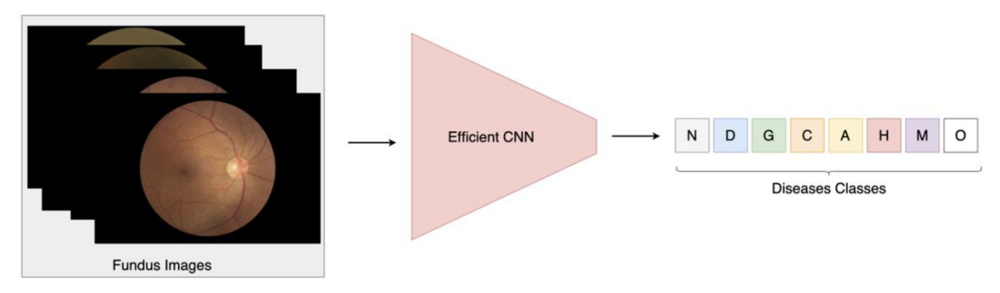
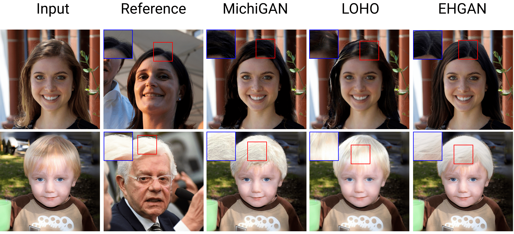
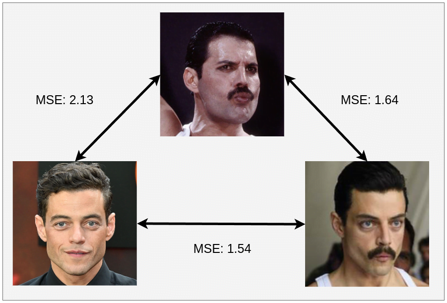

Performance Analysis of Efficient Deep Learning Models for Multi-Label Classification of Fundus ImageMuhammed Pektas AITA Github |
Efficient Hair Style Transfer with Generative Adversarial NetworksMuhammed Pektas, Baris Gecer, Aybars Ugur Arxiv Github |
Realistic Hair Synthesis with Generative Adversarial NetworksMuhammed Pektas, Aybars Ugur - Master Thesis Arxiv Yöktez |
Identity Similarity (idsim)This repository can help researchers who want to use face recognition in their research. Muhammed Pektas Github |
BFAS - Brute Force Architecture SearchMuhammed Pektas Github |
PysimplerThis package simplifies the fundamental software engineering practices such as bottleneck analysis, cache cleaning etc.Muhammed Pektas Github |